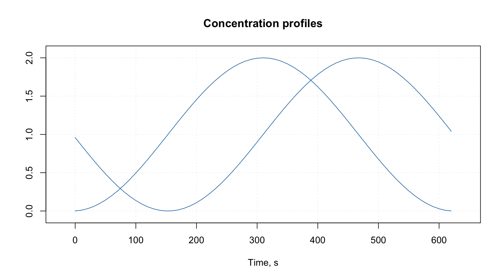

Attributes and factors
This section tells how to extend the functionality of the package by using attributes assigned to datasets and how methods implemented in the package deal with factors.
Attributes for plots
The plot attributes will be explained very briefly here, you can find much more details in the next two sections. The idea is to provide some names and values to the data, which can be used later e.g. for making labels and titles on the plots. When dataset is used to create a model (e.g. PCA) all results representing objects (e.g. scores, distances, etc.) will inherit the row specific attributes and all results related to variables (e.g. loadings) will inherit column specific attributes.
The main attributes for plots are following:
| Attribute | Meaning |
|---|---|
name |
name of a dataset (used for plot parameter main). |
xaxis.name |
if variables/data columns represent the same property, e.g. wavelength, the property name can be defined by this attribute (used for plot axes labels). |
yaxis.name |
if objects/data rows represent the same property, e.g. reaction time, the property name can be defined by this attribute (used for plot axes labels). |
xaxis.values |
a vector of values, which correspond to the columns (e.g. for spectroscopic data it can be a vector with wavelength or wavenumbers). |
yaxis.values |
a vector of values, which correspond to the rows (e.g. for kinetic data it can be a vector with time or temperature values). |
Here is a very simple example.
# generate data as matrix with two rows and 63 columns
t = -31:31
d = rbind(sin(t/10), cos(t/10)) + 1
# add name of the dataset
attr(d, "name") = "Concentration profiles"
# add name and values for a property representing the columns (time of reaction)
# we make values for x-axis to span from 0 to 620 seconds
attr(d, "xaxis.name") = "Time, s"
attr(d, "xaxis.values") = (t + 31) * 10
# make a line plot for the data
mdaplot(d, type = "l")
As you can notice, both the label and the ticks for x-axis correspond to the attributes we defined. As well as the main title of the plot. As we mentioned above these attributes will be inherited and e.g. PCA loadings will have the same x-axis if you decide to make a line plot for the loadings.
See more details in the section about plots.
Special methods for data transformations
Since data objects in R loose all user specified attributes when e.g. we transpose them or taking a subset, it was decided to write several methods, which would process attributes correctly. They also adjust indices of excluded rows and columns when user takes a subset or merge two data objects together. When data matrix is transposed the corresponding method will swap the x- and y- attributes. All methods with a brief description are listed in the table below.
| Method | Description |
|---|---|
mda.show(data) |
Show data object without excluded elements |
mda.t(data) |
Transpose data object |
mda.cbind(data1, data2, ...) |
Merge several datasets by columns |
mda.rbind(data1, data2, ...) |
Merge several datasets by rows |
mda.subset(data1, subset, select) |
Take a subset of data object (subset is numeric indices,
names or logical values for rows, select — the same
for columns) |
attrs = mda.getattr(data) |
Return all user specific attributes from an object |
data = mda.setattr(data, attrs) |
Assign user specific attributes to an object |
To avoid any problems with arguments use these functions instead of the traditional ones, e.g. mda.subset() instead of subset(), when available.
Data frames with factors
All methods, implemented in the package, work with matrices, therefore, if a user provides data values as data frame, it is converted to matrix. It is also possible to provide data frames with one or several factor columns. In this case all factors will be converted to dummy variables with values 0 and 1. You can also do it manually, by using function prep.df2mat() as this is shown in an example below.
Let us first create a simple data with a factor column.
h = c(180, 175, 165, 190, 188)
c = as.factor(c("Gray", "Green", "Gray", "Green", "Blue"))
d = data.frame(Height = h, Eye.color = c)
show(d)## Height Eye.color
## 1 180 Gray
## 2 175 Green
## 3 165 Gray
## 4 190 Green
## 5 188 BlueAnd this is the result of converting it to a matrix.
d.mat = mda.df2mat(d)
show(d.mat)## Height Blue Gray
## [1,] 180 0 1
## [2,] 175 0 0
## [3,] 165 0 1
## [4,] 190 0 0
## [5,] 188 1 0The number of dummy variables by default is the number of levels minus one. You can change this by using argument full = TRUE is it is shown in the example below.
d.mat = mda.df2mat(d, full = TRUE)
show(d.mat)## Height Blue Gray Green
## [1,] 180 0 1 0
## [2,] 175 0 0 1
## [3,] 165 0 1 0
## [4,] 190 0 0 1
## [5,] 188 1 0 0It is important to have level labels in all factor columns of the same data frame unique, as they are used for names of the dummy variables (e.g. you should not have two factors with the same level name). If a factor is hidden it will be just converted to numeric values and remain excluded from modelling.